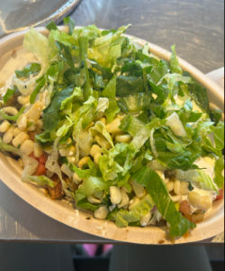
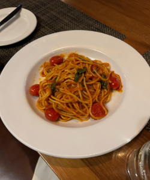

My Favorite foods
I love chipotle. I wish I was a chipotle. Chipotle is my life. My typical order is a bowl with half white half brown rice, chicken, fajitas, mild, extra medium, hot on the side, sour cream, corn, cheese, sometimes guacamole, and vinagrette on the side. If I'm feeling like a baller that day I'll even throw in some chips on the side to eat with my bowl.One of my favorite foods is Chipotle because I love the toppings and how everything is freshly made. I eat Chipotle about three times a month, I highly reccomend!
Another favorite food of mine is pasta. There's something about spaghetti specifically that makes it so good. I like pasta with tomato sauce, alfredo sauce, seafood, chicken, etc. Pasta is usually my go to meal for when I want to experiment with new ingredients and flavors because it's so versatile.
My current favorite TV Shows
- Crash Landing On You
- Attack On Titan
- Hunter x Hunter
- Vincenzo
I'm really into rom-coms and K-dramas but none of them even come close to my favorite anime show Attack on Titan. This show is a rollar coaster of emotions from the villain origin arc, the character development,the plot twist, and especially the ending. The story follows the main character Eren and his friends as they try to defend their homeland from 20ft tall humans called Titans who are contantly eating humans. As the series progresses they discover many secrets about the titans and their homeland Paradis Island. I'm rewatching the series and it's honestly the best show ever made I highly reccomend. Here's a funny video that hopefully will convince you to watch the show!